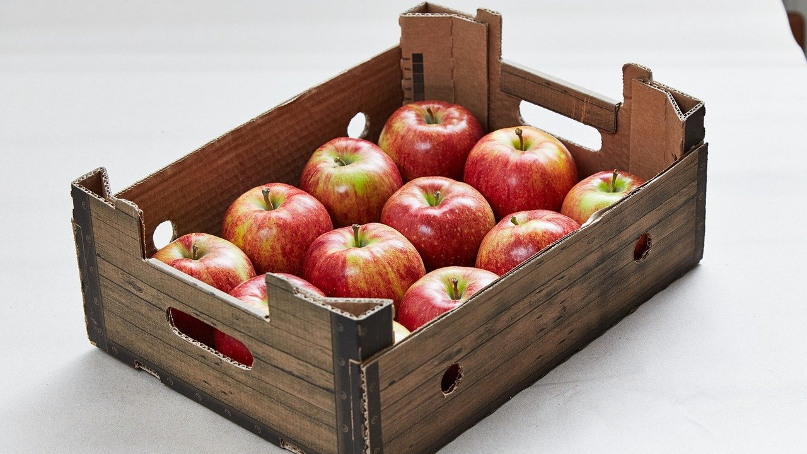

Как хранить яблоки на зиму в квартире: 5 ошибок, из-за которых они гниют к Новому году

Как хранить яблоки на зиму в квартире, если нет ни погреба, ни подвала? Можно, и до весны, но только если не сложить их в ящик как есть.
Яблоко после сбора продолжает дышать: выделяет тепло, влагу и особый газ, от которого соседние плоды зреют быстрее. Поэтому одно мягкое яблоко за пару недель портит весь ящик.
У нас двое детей, и яблоки дома не переводятся. Осенью их выгоднее брать сразу помногу, и я не раз видела, как половина ящика уходила в мусор уже в ноябре. Вот пять ошибок, которые к этому приводят.
Ошибка №1: мыть яблоки перед хранением
Самый неочевидный совет: яблоки на зиму не моют. На кожуре есть тонкий природный восковой слой, и он защищает плод от влаги и гнили. Если его смыть, яблоко начинает сохнуть и портиться гораздо быстрее.
Что делать: просто протереть сухой мягкой тканью, если есть пыль. Мыть только перед тем, как есть.
Ошибка №2: класть всё подряд в одну коробку
В ящике оказываются вместе крупные и мелкие, целые и с вмятинками, поздние и летние сорта. Яблоко с маленьким побитым бочком начинает гнить первым и тянет за собой остальные.
Что делать: перебрать яблоки, отложить на хранение только целые, без вмятин, с хвостиком. Побитые съесть или пустить на шарлотку в ближайшие дни.
Ошибка №3: хранить летние сорта вместе с зимними
Летние и ранние осенние яблоки лежат недолго, от силы месяц. Зимние сорта, наоборот, после сбора ещё дозревают и становятся вкуснее к декабрю. Если смешать их, летние быстро перезреют и испортят зимние.
Что делать: на зиму оставлять только плотные поздние сорта, а мягкие летние есть сразу или варить из них компот и повидло.
Ошибка №4: ставить ящик в тёплую комнату
В квартире 22–24 градуса, и для яблок это слишком тепло. В тепле они быстро мягчеют, становятся рыхлыми и теряют вкус уже через пару недель.
Что делать: держать яблоки при 0–5 градусах: на утеплённом балконе или в нижнем ящике холодильника, в пакете с парой проколов.
Если балкон не утеплён, ящик ставят в старое одеяло или коробку с пенопластом, чтобы яблоки не промёрзли в морозы. Замёрзшее яблоко после оттаивания темнеет и уже не хранится.
Ошибка №5: складывать яблоки вплотную друг к другу
Когда яблоки касаются друг друга, гниль переходит с одного на другое очень быстро. А в плотной куче их не видно, и испорченное яблоко находят, когда вокруг него уже три мягких.
Что делать: завернуть каждое яблоко в бумагу и уложить в один-два слоя хвостиком вверх.
Раз в две недели ящик перебирают и сразу убирают яблоки, которые начали мягчеть.

Что ещё помогает
Яблоки держат отдельно от картошки и овощей. Картошка забирает влагу и даёт яблокам землистый привкус, а сами яблоки ускоряют прорастание картофеля.
Хорошо подходят деревянные ящики или картонные коробки с отверстиями: в них есть воздух, и не скапливается влага. Пластиковые контейнеры без дырочек лучше не брать, в них яблоки быстро запотевают.
Если яблок очень много, часть удобно сразу нарезать дольками и заморозить для выпечки или подсушить в духовке на зиму.
От автора
Мне раньше казалось, что хранить яблоки в квартире до весны невозможно, это только для тех, у кого есть погреб. Но оказалось, что главное здесь не место, а внимание: перебрать, завернуть и не забывать заглядывать в ящик.
Есть что-то очень уютное в том, чтобы в январе достать с балкона холодное хрустящее яблоко. Как будто осень немного задержалась в доме.
Подписывайтесь: впереди разборы о том, как сохранить осенний урожай и заготовки до весны без лишних хлопот.
А где вы храните яблоки зимой: на балконе, в холодильнике или на даче?